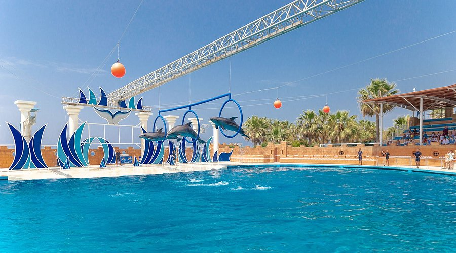
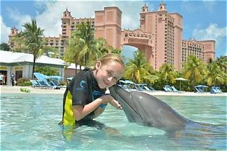

Juče smo našem najmlađem članu parka proslavili prvi rođendan!
Vidi slike

Delfinarijum je jedini park u regionu koji nudi zabavan i rekreativan sadržaj koji uključuje delfine. Da, dobro ste čuli, delfine. Ovaj park predstavlja spoj zabave, druženja, igre, ali i sticanja novih znanja o delfinima.
Akva park ima 7 bazena, bazen sa talasima, kao i bazene različitih dubina prilagođene deci i odraslima. Možete igrati vodeni fudbal i zabavljati se sa prijateljima ili drugim posetiocima, probati bandži džamping sa visine od 70 metara ili rafting sa 300 metara visinske razlike i veštačkim talasima.
Tu je i terasa za uživanje u suncu i pogledu na more i obalu Rovinja, gde se možete odmoriti od zabave. Park prima do 2000 posetilaca dnevno i obuhvata površinu od 6500 m2. Ukoliko volite delfine, zabavu, igru i druženje, Delfinarijum je pravo mesto za vas.





Nalazimo se 56km istočno od Rovinja, u uvali Jadranskog mora. Ovde možete videti detaljniju lokaciju.